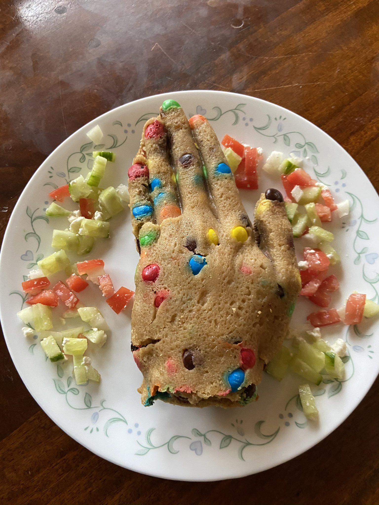

The Kings Hand

The Kings Hand Recipe
Originating in Twitter User @Neo Cannolialist's dreams. The Kings Hand is a dreamworld delicacy.
Ingredients
- 1 Pound of M&Ms
- 1 Tube of your favorite Cookie Dough
- Ovensafe Foodgrade Silicone Plastique Mold
- Greek Salad
Steps
- First, you will need to make a mold of a hand. For this I used food grade silicon putty safe up to 400 degrees.
- Make M&M cookie dough. I just took some recipe off online
- Fill your mold with the dough
- Put the m&ms for the nails and knuckles in first
- Set the oven to a lower temp than the recipe requires (mine was 325 vs 375) and bake for like 2-3 times as long
- Take it out and scoop out dough for the base and to make it hollow
- Flatten the scooped out stuff into a thin sheet and put in the oven to bake, along with the hand again. I dunno, I did like 10 minutes. Raise the temp back up to bc now you want it hot and baked
- Take it out and freeze it! Gotta be cool and solid to demold. Meanwhile chop up the Greek salad.
- When it is solid remove from the mold, cut around the hand to remove the overhanging edges
- Fill with salad, cover with base, and you have the King’s Hand